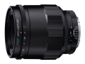

适用于索尼FE卡口的手动对焦镜头，可以和机身传输EXIF信息，支持五轴防抖，可以进行1/3光圈调节。
10月15日拿到镜头，用了2小时，把实际感受补上。 成像比意料还好，基本是100分。 造工比一意料的差，以前用过的福伦达大都是m头，会不会那是福家最高标准？好像无反头手感差些，没那么压手。 总体评价比料想还好！！
2的最大光圈绝对是很锐的，大光比没紫边，虚化漂亮。 2017最值得买的镜头，估计应该是具有时代技术象征的一枚镜头。 做标头也可打90分。
造工没自家的m头好，精度尚可，手感差些。瞎猜下，m头有铜镜筒或不锈钢，这头是铝合金？
期待，APO加持，三色环加持。 手边有几只微距，都是100的，也有本家125/2.5APO，印象深刻。 期待有只焦距短点的。
估计值是预判值，到手后再修正。
用过福伦达好几只头，总体优评，也有微瑕。 机械完美，色彩稍干。